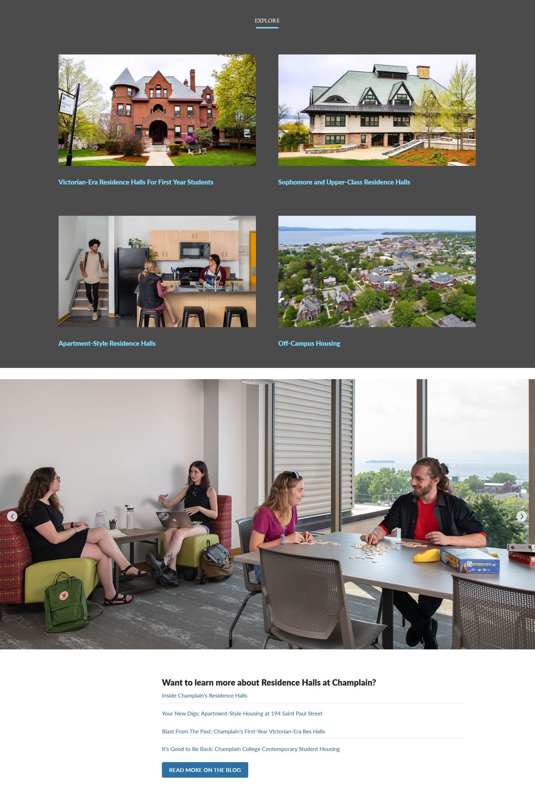

Jake Buzzell
Software Developer & Sound Designer
Jake Buzzell is a software developer, web designer, and sound designer currently living in Burlington, Vermont.
Jake has a passion for exploring the intersection between art and technology. As a web designer, he strives
to create simple, clean, and readable user experiences. As a software developer, he uses his attention to detail
and strong interpersonal skills to seamlessly integrate into any development team or environment. You can view his public-facing code projects here.
As a sound designer, he works closely with the client to provide music and foley that closely matches the needs of any given
project while allowing his own style and inspirations to shine through. You can listen to some of his musical output
here. Outside of his work, he is passionate about
guitar pedals and synthesizers, cooking, and reading.
Programming Languages
- HTML
- CSS
- JavaScript
- C++
- Python
- Swift
Software
- Git
- Photoshop
- XD
- Logic Pro
- FL Studio
- Ableton Live
Education & Accomplishments
- Bachelor of Science in Computer Science and Innovation, Champlain College (Expected May 2020)
- Champlayers Drama Club Leaders in Theatre Team member and director
- Dean's List 3 semesters
Cacophony
Experimental Melody Generator
Cacophony is a currently-in-development guitar-to-MIDI module that detects (or perhaps suggests)
the key a musician is playing in, and sends randomly generated melodies in that key to two external MIDI
devices in parallel. Melodies generated by
Cacophony can be interacted with in a number of ways. For
instance, the user can adjust basic things like the melody's tempo or step length, or even lock a melody in
place with a momentary footswitch. More complex adustments to the device's MIDI outputs can be made as well;
for example, the user can select various MIDI output modes such as parallel, mutually exclusive, and latching.
Cacophony is Jake's Senior Capstone project at Champlain College, and is slated to be completed by April 20th 2020.
GitHub.
Champlain College Marketing

As a Web Design Intern at Champlain College's Marketing, Jake aided with the creation of new page layouts and CMS components.
A notable project he aided with was the redevelopment of a series of pages about life on Champlain's campus.
In the weeks and months leading up to the project, he helped develop a number of new reusable page components
for use in the site's
Academic Division
pages. The development of these page components paved the way for the
Student Life
pages, whose development time was largely focused on polish and content edits.
Sigiriya
Sigiriya is a currently-in-development cross-platform mobile game based on the history of Sigiriya,
a Sri Lankan cultural landmark and
UNESCO World Heritage Site.
Sigiriya is a resource-management game with a heavy focus on narrative and the player's relationship with the game's
characters. Jake wrote music and created foley sounds for tactile interations in the game.
Website.